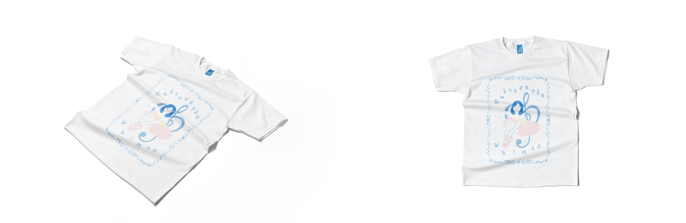
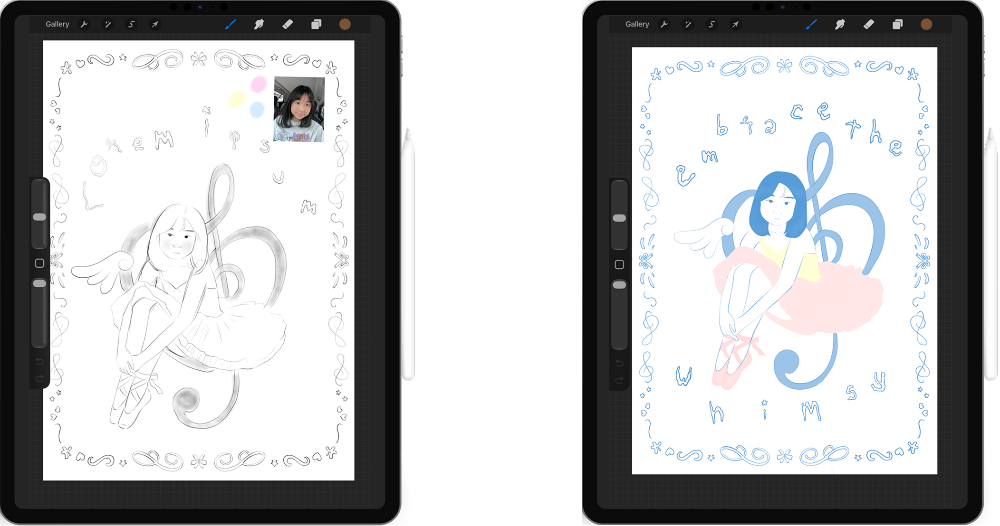

Self-Portrait Screen Printing T-Shirt Design · 2026
T-Shirt Design · 2026
T-Shirt Design · 2026
Self-Portrait Screen Printing
About the project
A personal shirt design inspired by my childhood dream of becoming a ballerina. Through original illustration and screen printing, the design captures the sentimental value of my first ballet attire and the beginning of a long-awaited journey.
SCOPE
Illustration · Graphic Design · Screen Printing
PROJECT TYPE
T-Shirt Design · 2026
The T-shirt design
Self-portrait
The illustration process
Sketch to colour
Self-Portrait Screen Printing · T-Shirt Design · 2026Back to top ↑